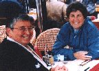

| HOME | SITE MAP |
[UNDER CONSTRUCTION]

Irene (l) and Marilyn (r) c.1980s
Marilyn died on Monday, November 8, 2004 in Arizona.
This page is dedicated to the life and activism of Marilyn Murphy.
If you
would like to post your message on this web page, please send
to yretter@yahoo.com.
It was early summer of 1977 and I had just returned to Los Angeles. I had recently experienced the soap opera break-up of my first lesbian relationship. This resulted in being kicked out of my apartment and needing a new place to live. Not knowing many people in L.A., I found myself walking into the Gay and Lesbian Community Center. The first person I met was Marilyn. She was working at the Center. After a few minutes of explaining my situation, Marilyn revealed that she was in need of a roommate and wondered if I was interested. We had experienced an instantaneous connection. I felt I had just met my long lost sister. Little did I know that that moment would be a momentous one. My life was definitely taking a step in the right direction.
Within a week or two of moving in with Marilyn, it was time for the Lesbian Feminist Camp named "Califia". She and Irene were founding mothers, and that camp was just the beginning of a wonderful year of living with Marilyn. I went quickly from struggling thru "Feminism 101" to taking a crash course in graduate level Feminism. The Women's Movement was charging full-steam ahead and so was Marilyn. Marilyn was involved with someone else when I first moved in with her. But about six months later that relationship had dissolved and she was soon spending increasing time with her friend...Irene. These were amazing, life-changing times for me and for her. Living with Marilyn was a whirlwind of feminist and lesbian discussions into the wee hours of the morning, wonderful parties full of exciting lesbians, debates about topics I knew nothing about: racism, sexism, classism and all the other "isms". Being introduced to new books, new thoughts, undiscovered (to me) women authors. It was a life-changing year. It was the "best of times."
And then I had the privilege of being there to witness the blossoming of Marilyn and Irene's love affair. I am still at a loss to know what to call their relationship. To see two fine, strong, smart, amazing women do their romantic dance together. It was not a "marriage"...Marilyn would bristle at that description. But it was certainly a respectful and exciting union of two fine women. They were trying to build a relationship that was based on staying together as long as it was viable. They were not to be bound together out of obligations, necessity, or any of the other labels that hold couples together. The debates on issues and the passion about feminism and lesbianism were building blocks. Not for a moment was their romance boring or blase. Instead, their relationsnhip was blazing, passionate and not without its conflicts. These two strong women had finally met their respective matches. There would be no "one-up-woman ship". They were equal. They had both finally met someone smart enough, tough enough, feminist enought, lesbian enough, sexy enough and funny enough. They reached a home-coming that would endure for many seasons.
I moved away after a year with Marilyn, but my friendship did not end there. There were many years to come of sharing the changes in all our lives. There were good times and some very sad times. Marilyn and Irene retired and subsequently discovered the joys of RV'ing. They tortured me for years with postcards from around America and Canada, giving me tantalizing glimpses of dreamy places. I knew I wanted to grow up and become just like them...full-time RV'ers. After four years of being on the road, they settled in the lesbian haven of the Pagoda in St. Augustine, Florida. I was able to visit them about once a year while they were there. They were instrumental players in defining that community.
Later on they relocated to Apache Junction, Arizona to join another women's community as well as part year at Discover Bay in Washington. The beauty of Discovery Bay resonated into Marilyn's being.
In retrospect, I was to have one final outstanding experience with Marilyn. I was lucky enough to have a terrific trip with Marilyn and Irene to France. We traveled for an entire month in the early summer of 1996. My partner Beth and I had thought it would be great fun if we rented a car and drove the four of us around France. Irene had been there as a young woman but the rest of us had never visited. We embarked on a month of exploration with no set itinerary except to see the most of France that we could. Irene was fascinated with the Camargue region and the wild horses that roamed the area. I relish the memories of the four of us on a private jeep tour through the wilds of the Camargue viewing flamingoes, the white Camargue horses, the Spanish and Camargue bulls. It was terrific. None of us could speak much French. Mainly we knew "restaurant French" and as I say, "what more did we need?" Marilyn managed to find simple comfort food in the form of a "Croque Monsieur" sandwich (grilled ham and cheese). That to me is so "Marilyn". She was a simple working class woman without pretenses. A grilled ham and cheese sandwich in France was her perfect meal. Top it off with a good cup of coffee or a sweet dessert and she was wonderfully satisfied. It was a priceless experience.
As so often happens in life, we don't always realize the gifts we have until we begin to lose them. Looking back, I would have to say that the France trip may have been one of the last times that Marilyn was at her peak. It seemed that shortly after the France trip she began her long descent into "the slow death that had no name." It has been heart-wrenching to watch the slow deterioration of such a smart, vital, feisty woman. I feel privileged that I knew her at the prime of her life. The life she endured the past few years was not one any of us would ever choose. It seemed so cruel that she would lose her most vital abilities and passions: to read, debate, analyze, speak forcefully, share stories, make us laugh, force us to examine our own biases and prejudices. She was trapped in a body that would not cooperate. To see her struggle to make sentences, to tell stories, and to remember simple words was heart-breaking. Many of us became unrecognizable to her as she struggled to figure out who we were. Her frustration must have been unbelievable.
And so her life has ended. Of course there is a relief to be felt that her suffering has come to an end. But that doesn't mean that the loss is not real. I know for myself that the memories that I shall always treasure will not be the images of the past few years. Instead, I will selectively play back the "mind movies" of how I met her, how I enjoyed hearing her speak and laugh. I will hear her stories of growing up in New York. The family tales of her mother and her sisters. The powerful, dynamic speaker. The feisty debater who could invent words and phrases. The righter of wrongs. The defender of the forgotten. She would never be silent in the face of injustices. She spoke boldly and loudly until you could not fail to hear her. The writer, the sister, the educator, the friend. In my heart she will always be my dear friend. I am blessed that I shared a few moments in time with her. I loved her.
Brook Shumway....November 11, 2004
Thu, 16 Dec 2004 07:36:38
Aloha Yolanda, My name is Ena, Marilyn's (lesbian)daughter. Would it be possible to print this piece I wrote about my mother? I think she would like it. Aloha, Ena Marilyn Murphy.........passes Pray to Mary when you need help. Jesus is so busy and he has to do what his mother tells him so... Pray to Mary. These were the instructions given to me as a child, by my mother, Marilyn Murphy, forever the feminist, even before her own conscious awareness. In fact Marilyn started out life as the eldest of the five Murphy Sisters (she was born to create women's space). Each of her sisters, exceptional, women, in their own right, loved their big sister Marilyn, using her as inspiration in their own lives. The mantra of their youth... the girls have to stick together, saw them through the struggles of early life in New York City, later as women in Oklahoma and later still as the Murphy girls migrated west to California, one at a time, the mantra still resonating! The girls have to stick together! The girls have to stick together! She passed this belief on to her daughters and to every woman she met, whether she was in Oklahoma in the 50s raising her children, later, at a women's event, in an R.V. park or in the line at a grocery store. Her message of freedom was always on her lips. At age ten, in Tulsa, she took me to picket in front of Howard Johnsons Restaurant,(they wouldnt serve blacks). At thirteen she gave me the Autobiography of Malcolm X, soon to be followed by Germane Greer and an endless list of must reading. Marilyn was driven by a need to be free and a need to help other women to be free. She dedicated her life to this struggle and now we continue on with her as our ancestor. Thank you Marilyn........Sister, Mother, Lover, Teacher. We love you and we know how much you loved us all! We will remember what you taught us: The girls have to stick together!
Marilyn Murphy, a radical lesbian feminist activist died on November 8, at the age of 72 in Arizona. She had been in poor health since suffering a stroke some years ago. Marilyn was born in New York City June 19, 1932, the first of five daughters. Her working class background later inspired and directed her ardent activism on behalf of class issues within the women's and lesbian movements. Before her career as an activist, Marilyn married, had four children and earned a master's degree. She moved to California in 1965, divorced, struggled to support her children and came out at the age of 43.
In 1975, she attended Sagaris, a women's institute where she felt a lack of equality between organizers and attendees. She and others returned to California determined to create an organization that was different. In 1976, she helped found Califia (1976-1986), known for both its weeklong campouts that drew hundreds of women and its memorable class and race workshops. During that time, Marilyn also helped found the San Fernando Valley Rape Crisis Services center and worked at the Gay and Lesbian Community Services Center (GLCSC) in Los Angeles promoting women's programs, including an early lesbians over 40 group. The year 1977 held great significance for Marilyn: She was one of ten out lesbians elected to go to the International Womens' Year Conference in Houston as part of the California delegation. That delegation was instrumental in persuading thousands of delegates, most of whom were heterosexual, to pass a pro-lesbian resolution. She also met Irene Weiss and began what she thought would be a "brief affair," but one that lasted 27 years.
Marilyn once wrote that her "two secret childhood ambitions were to sing in a nightclub in a sequined gown and to write an opinion column for a newspaper." She was happy to have realized one of them, when in 1982 she joined the Lesbian News to write a column, "Lesbianic Logic." In it she discussed and made candid observations about topics of debate within the community, ranging from Classism to Bisexuality, from Lipstick lesbians to Ageism. After Irene retired, they moved to Florida to be part of the Pagoda, an early woman's residential community. In 1995 they moved to another woman's community in Arizona and spent their summers in Washington state at another women's community.
Marilyn contributed her writing to a number of anthologies including Out of the Class Closet and was the author of Are You Girls Traveling Alone?, a selection of her Lesbian News columns. In the introduction to Are You Girls... writer and philosopher, Marilyn Frye noted that Marilyn Murphy's feminist analysis "evolves coherently from a central and passionate philogyny (the opposite of misogyny) an intelligent and engaged loving perception of women."
Marilyn's partner Irene recalls that, "What Marilyn loved most was
reading,
analyzing and exploring women's issues with other women. These discussions
were the bread and butter and champagne and caviar of her life.She also
loved writing her articles and essays and having them published.And last,
she loved our home, our cats, and our personal interactions as lovers,
equal partners,and best friends, during our 27 year 'brief affair.'" (For
more on the "brief afair," see Are You Girls...). The hundreds of lesbians
who knew Marilyn through her indefatigable activism on behalf of women
will miss her. She is survived by her life-partner and activist colleague,
Irene Weiss, her four children, her sisters, nieces, nephews and
grandchildren. A service will be held in Los Angeles early next year.
Location and date to be determined. Please contact yretter@yahoo.com for
more information.
Photograph courtesy of Maria Dolores Diaz. Photographer unknown.
This web page is offered as a community service by the Lesbian History
Project
Link
Back to the IN MEMORIAM LGBT ACTIVISTS web page
Link